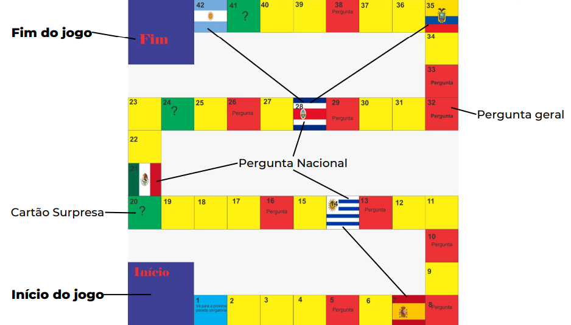

Regras:
- O jogo terá 6 participantes por rodada.
- As identificações são feitas com as pulceiras das cores dos países.
- casas de perguntas:
• Será feita uma pergunta sobre futebol feminino no quesito geral. Caso o jogador não acerte segue o jogo normalmente.
- parada obrigatória:
• Nessas casas os jogadorres deve para mesmo se tirarem um número suficiente para ultrapassar a casa.
• O jogador irá responder uma pergunta sobre o futebol feminino do país respectivo.
• Caso erre ficará parado até a sua próxima jogada onde responderá uma nova pergunta e só sairá se acertar.
• caso acerte poderá seguir o jogo. Se acontecer de um jogador tirar um numero acima da parada obrigatória, após responder corretamente poderá proceguir para a casa
- casa da sorte:
• se o jogador cai em uma casa de sorte ele terá que tirar uma carta da sorte que pode conter uma consequência boa ou ruim.
- vc ganha o jogos depôs de atravessar todo o tabuleiro antes dos outros jogadores.
- Exemplo do Tabuleiro

Boa Sorte!